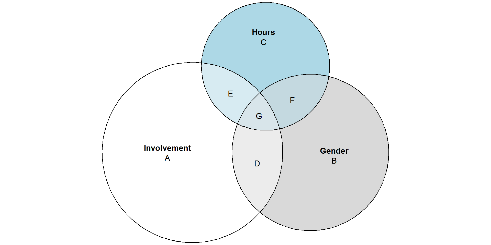
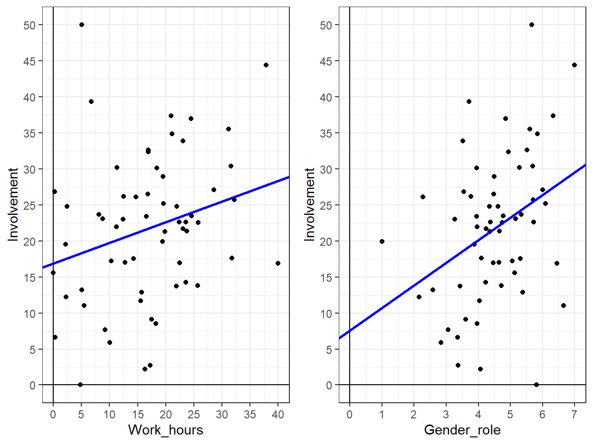
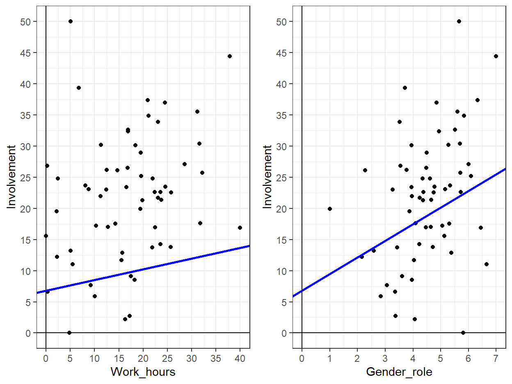
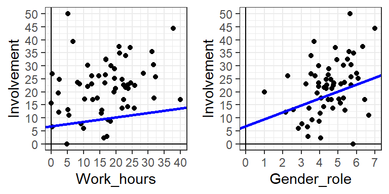
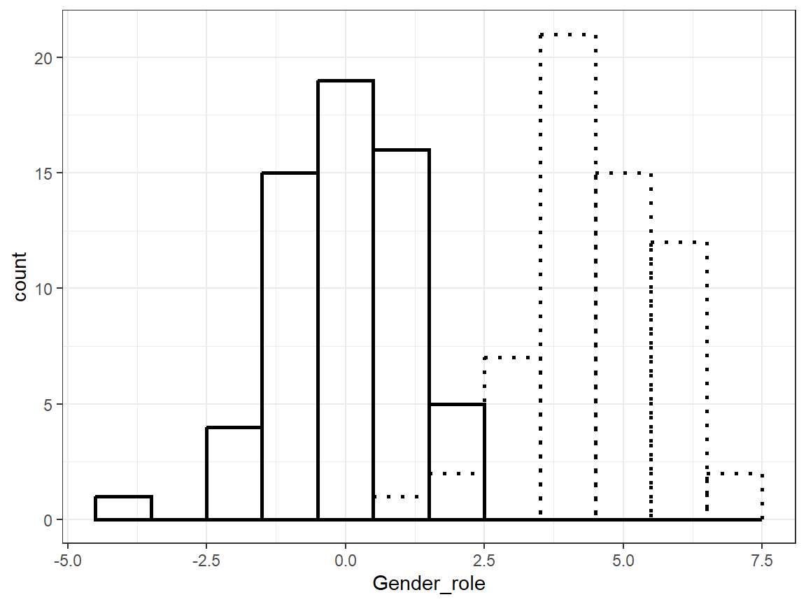
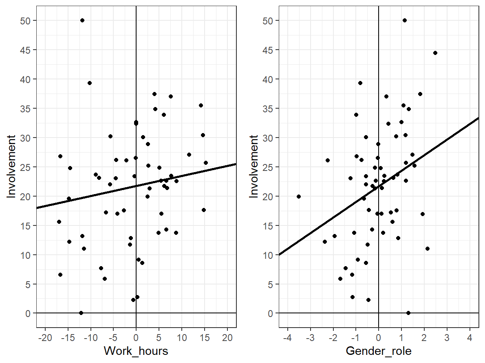
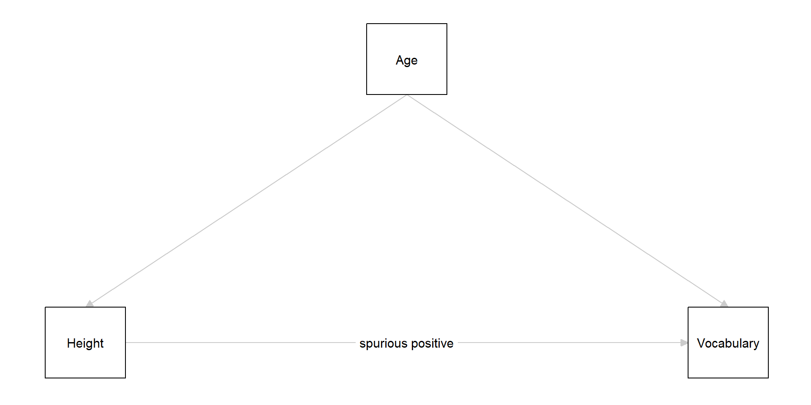
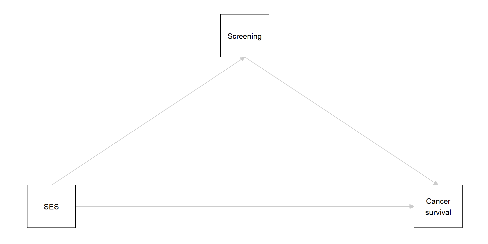
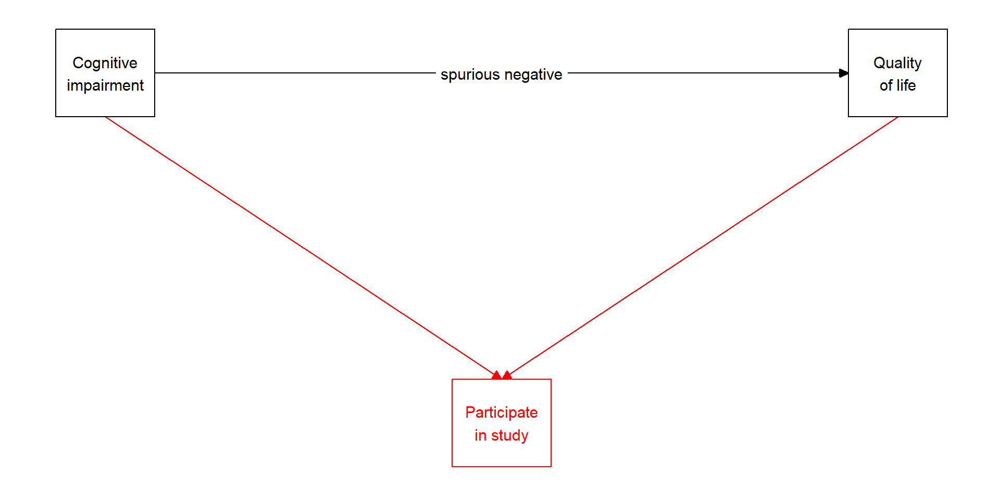

Lecture 9 - GLM V Multiple Regression
Caspar J. van Lissa
2023-08-16
Recap
Two+ categories
Remember: we can use bivariate linear regression to model two categories
\(\hat{Y}_i = a + b*X_i\)
- a: Mean of group 1
- b: Mean difference between groups 1 and 2
For three+ categories, we can expand the model:
\(\hat{Y}_i = a + b_1*X_{1i}+ b_2*X_{2i}\)
- a: Mean of group 1
- \(b_1\): Mean difference between groups 1 and 2
- \(b_2\): Mean difference between groups 1 and 3
Multiple regression
The model with two dummies is also an example of \(\color{blue}{\text{multiple regression}}\).
Multiple regression: Regression with more than one predictor.
- Answers the question: What is the unique effect of one predictor, controlling for the effect of all other predictors?
Multiple regression
\(\hat{Y}_i = a + b_1*X_{1i}+ b_2*X_{2i}\)
Last week, \(X_1\) and \(X_2\) were dummies (only 0 and 1 values)
You can simply replace them with continuous predictors!
You can expand the model with as many predictors as you like:
\(\hat{Y}_i = a + b_1*X_{1i}+ b_2*X_{2i} + b_3*X_{3i} + \dots + b_K*X_{Ki}\)
Parameter interpretation
\(\hat{Y}_i = a + b_1*X_{1i}+ b_2*X_{2i}\)
\(a\) is the \(\color{blue}{\text{intercept}}\)
- Expected value when all predictors are equal to 0
- When using dummies, this is the mean value of the reference category
- When using continuous predictors, this is the expected value for someone who scores 0 on all predictors
\(b_1\) and \(b_2\) are \(\color{blue}{\text{slopes}}\)
- There’s one \(b\) for each \(X\)
- \(b\) tells us how many points Y increases if X goes up by 1, while keeping all other X-values equal
Unique effects
Aim: predict dependent variable Y from multiple predictors \(X_1, X_2, \ldots,X_k\) with a linear model:
\(y_i = b_0 + b_1 * x_1 + b_2 * x_2 + \ldots + b_k * x_k + \epsilon_i\)
This will give you the unique/partial effect of each predictor, while keeping all other variables constant
A story of bubbles
A story of bubbles
Imagine that these two circles represent the variance in two variables, for example, “Father involvement” and “Hours worked”

Visualizing covariance
Imagine that “Father involvement” and “Hours worked” covary
- There would be overlap in the circles (area C)
- We can describe this overlap as correlation, or as a regression coefficient

Visualizing covariance
Now, let’s say that “Father involvement” and “Gender role attitudes” also covary
- There would also be overlap in these circles
Visualizing multiple regression
Finally, imagine that Hours worked and Gender role attitudes both covary with Involvement, and also with one another (e.g., maybe more progressive fathers work fewer hours)
Coefficients
Coefficients
Only work hours:
| Variabele | B | t | p |
|---|---|---|---|
| (Intercept) | 16.90 | 6.26 | 0.00 |
| Work_hours | 0.29 | 2.05 | 0.04 |
Only gender roles:
| Variabele | B | t | p |
|---|---|---|---|
| (Intercept) | 7.57 | 1.50 | 0.14 |
| Gender_roles | 3.14 | 2.90 | 0.01 |
Multiple regression:
| Variabele | B | t | p |
|---|---|---|---|
| (Intercept) | 6.81 | 1.34 | 0.18 |
| Work_hours | 0.17 | 1.19 | 0.24 |
| Gender_roles | 2.66 | 2.32 | 0.02 |
Coefficients
Why is work hours significant on its own, but not significant when we add gender roles?
Only work hours:
| Variabele | B | t | p |
|---|---|---|---|
| (Intercept) | 16.90 | 6.26 | 0.00 |
| Work_hours | 0.29 | 2.05 | 0.04 |
Multiple regression:
| Variabele | B | t | p |
|---|---|---|---|
| (Intercept) | 6.81 | 1.34 | 0.18 |
| Work_hours | 0.17 | 1.19 | 0.24 |
| Gender_roles | 2.66 | 2.32 | 0.02 |
Separate bivariate regression
Two separate bivariate regression models, \(\hat{Y}_i = a + b_1*X_1\)
Multiple regression example
\(\hat{Y}_i = a + b_1*X_1 + b_2*X_2\)
Multiple regression example
The lines are no longer “in the middle” of the data cloud?
- The effect of Work_hours is controlled for the effect of Gender_role, and vice versa
\(\color{red}{\text{This is clearer when you vidualize this as a 3D plot}}\)
Multiple regression 3D plot
Centering
Centering
\(a\): The \(\color{blue}{\text{intercept}}\), expected value when all predictors are equal to 0
But: almost nobody works 0 hours, and nobody scores 0 on the 1-7 point Likert-scale for Gender_roles
Centering
That’s why we move the zero-point:
\(\text{Center}(Y_i) = Y_i - \bar{Y} = \text{observations - mean}\)
Multiple regression after centering
After centering, the separate plots look like this:
Centering
By centering, you can choose a meaningful zero-point for your predictors
- For example, the mean value
When to use?
When to use multiple regression?
- To make better predictions using all available predictors
- To compare relative importance of different predictors
- When theory implies multiple causes
- To improve causal inference by controlling for confounders
Standardized regression coefficients
Standardizing regression coefficients
Problem: We want to know how important different predictors are
Problem: We want to compare the effect of the same variable across two studies
Solution: Standardize the regression coefficient to make them ~comparable
What is standardized regression coefficient
It’s just the regression coefficient you would get IF you carried out the analysis after standardizing the X and Y variables
Instead of X and Y, we use Z-scores:
\(Z_x = (X - \bar{X}) / SD_x\)
\(Z_y = (Y - \bar{Y}) / SD_y\)
Z-scores: mean = 0, SD = 1
Z-scores lose the original units of a variable. The new unit is the SD: a Z-score of 1.3 means “1.3 standard deviations above the mean”
Interpretation
Unstandardized
A one unit increase in X is associated with a \(b\) unit increase in Y
Standardized
A one SD increase in X is associated with a \(\beta\) SD increase in Y
When to use (un)standardized coefficients?
Unstandardized
- If the units are meaningful/important (e.g., years, euros, centimeters, number of questions correct)
- If there are (clinical) cut-off scores
Standardized
- When units are not meaningful (e.g., depression, need to belong, job satisfaction, Likert scales).
- If you want to compare effect sizes / variable importance
Multicolinearity
Multicolinearity
Problem: Multiple regression gives us the unique effect of each predictor, controlling for all other predictors. What if multiple predictors overlap substantially?
Example: What would happen if I predicted total body length from the length of people’s left leg and right leg?
- It’s definitely possible to predict body length from leg length
- Legs are approximately equally long
- They both predict body length equally strongly
- Their effects overlap nearly 100%
- Left leg does not have a unique effect controlling for right leg, or vice versa
Example
Using both legs as predictors:
| B | SE | t | p | |
|---|---|---|---|---|
| (Intercept) | 110.1193120 | 8.0076963 | 13.751684 | 0.0000000 |
| Left | -0.7136156 | 0.3887647 | -1.835597 | 0.0774550 |
| Right | 1.4912384 | 0.3786456 | 3.938349 | 0.0005209 |
Using one leg:
| B | SE | t | p | |
|---|---|---|---|---|
| (Intercept) | 111.4975711 | 9.8573918 | 11.311062 | 0.0e+00 |
| Left | 0.7611357 | 0.1287496 | 5.911751 | 2.3e-06 |
Defining Multicolinearity
Multicolinearity: When two or more predictors explain the same variance in the outcome.
- With two predictors, the correlation between predictors can give some indic
Causality
Causality
- Often, we want to find causal relationships: X -> Y
- Treatment, Policy decisions, Investments
- Causality can only be established using experiments, or assumed based on theory
- If we rely on theory, it is crucial that we correctly represent our theory in our analyses
- If the theory is wrong, or incorrectly represented by the analysis, our results will be misleading
Bivariate relationships
Possible relationships:
- There is no statistical way to distinguish which one is “true”
- That’s the realm of theory

Trivariate relationships
- Common cause
- Indirect effect
- Collider

Common cause
- A and C share a common cause B
- Changes in B induce changes in both A and C, resulting in covariance between A and C
- If you only examine the relationship between A and C, it will be distorted by the effects of B
- In this context, B is a confounder
- Controlling for B is good / necessary if you want to study the relationship between A and B
Examples confounding

Examples confounding
Examples confounding

Indirect effect
- Also called mediation or chain relationship
- B is a process variable or intermediate step in the relationship between A and C
- Controlling for B hides the (indirect causal) association between A and C
Partial mediation example
Colliding
Colliding: If two unrelated variables separately cause a third variable, controlling for that third variable will create a spurious statistical relationship between the unrelated variables.
- Also called “common effect” relationships: B is a common effect of A and C
- In this case, do not control for B when studying the relationship between A and C!
Example collider
Example collider

Example collider

Take-home message
Assuming that your model is correctly specified,
- Controlling for confounders improves causal inference
- Controlling for a collider biases (causal) inference
So don’t put EVERYTHING in the model without good reason!
Further reading

Image credit: XKCD
- Judea Pearl’s “The book of why?” - excellent holiday reading material!
- This blog post
- Cinelli, C., Forney, A., & Pearl, J. (2022). A crash course in good and bad controls. Sociological Methods & Research, 00491241221099552. https://ftp.cs.ucla.edu/pub/stat_ser/r493.pdf